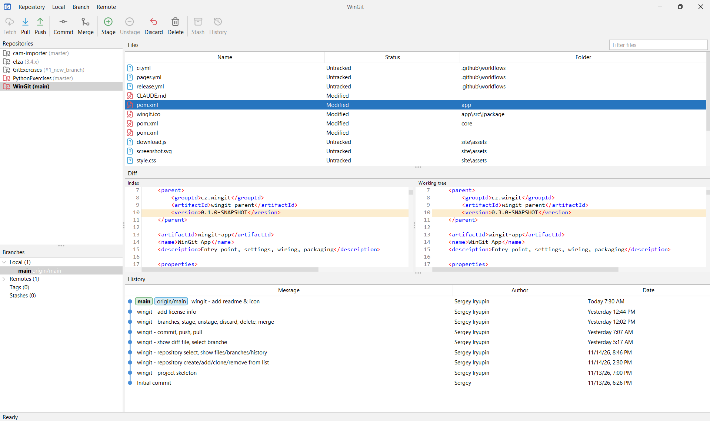

WinGit
WinGitUse Git easily and simply
WinGit is a free, open-source desktop Git client. History graph, side-by-side diffs, staging, branches and merges — all in one window.
Windows: MSI, ZIP · Linux: DEB, RPM, tar.gz · macOS is planned
Apache-2.0 · Privacy policy


Features
History graph
See branches and merges as a clear commit graph.
Side-by-side diff
Review changes in two aligned columns with syntax highlighting.
Staging
Stage, unstage or discard files before you commit.
Commit, push, pull
Everyday work with remotes, without the command line.
Branches and merges
Create, rename, delete and merge branches in a few clicks.
All your repositories
Keep them in one list; the ones with changes stand out.
English, Russian, Czech
WinGit speaks your system language, or the one you pick in Settings.
Light or dark
Choose a light or dark theme; the diff colors follow it.
Why WinGit?
For more than ten years I have worked with Git through a commercial desktop client. It is a very convenient tool, but some things were always missing, and I filled those gaps on the command line.
At some point I thought it would be good to have a similar client that is open source: free to use, study and change, with no license fees or usage restrictions, so that anyone can add the features they need.
WinGit is that client. It already works for everyday tasks, and I use it myself while it grows.
The “Win” in WinGit stands for window: a windowed Git client, not a Windows-only one.
Status and plans
- Now: early but working — repositories, files, branches, history, diffs, staging, commit, push, pull and merge; in English, Russian or Czech, with a light or dark theme.
- Next: a group of beta testers and a macOS build.
Want to help? Download WinGit, try it on your repositories and tell us what works and what doesn't. Bug reports, ideas and pull requests are welcome.